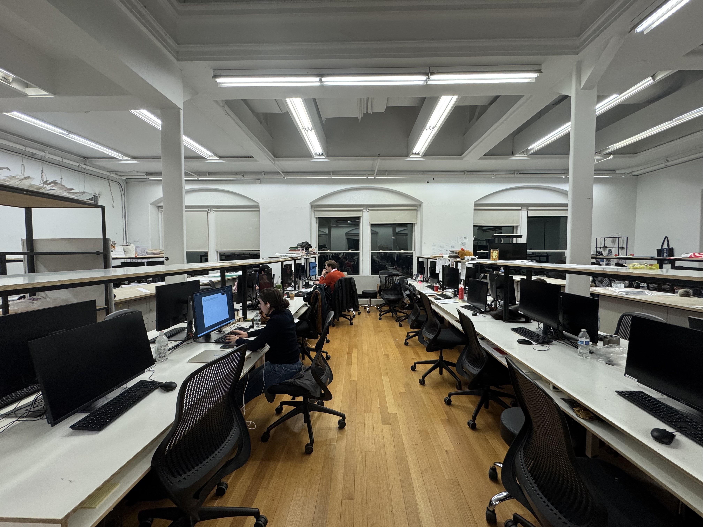
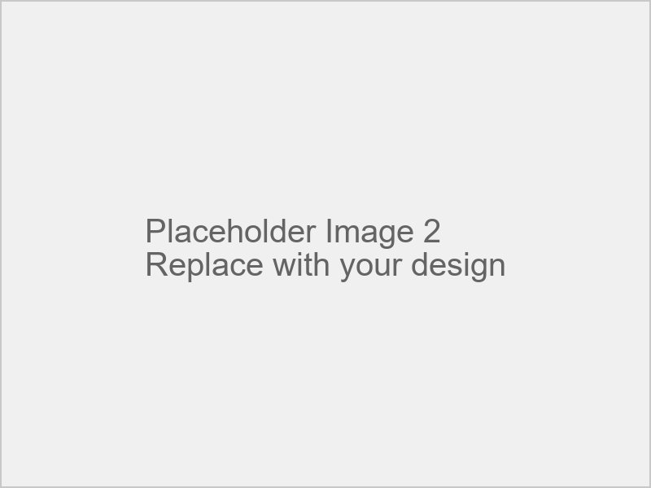
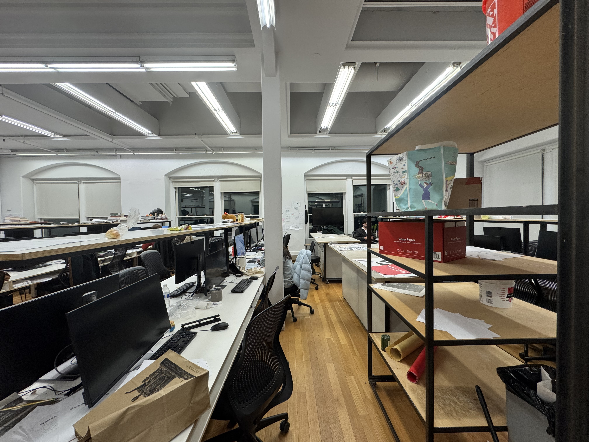
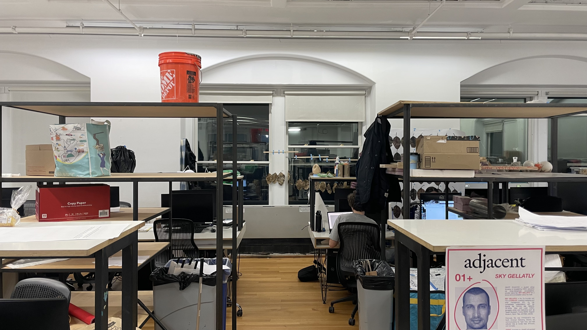

Use these prompts to guide the AI in generating your ideal space
Describe the main subject or elements you want to see in your space. Focus on furniture, design elements, or activities.
Describe the environment or context around your main elements. Consider lighting, views, and spatial relationships.
Specify what elements you don't want in the image. This helps refine the result by excluding unwanted features or qualities.
Source Image
Preview Result
Select Studio View
Choose from preset views of the 600S Avery studio space at Columbia GSAPP
OR
Find Location
Search for a specific location or use the map to find a street view
Click on the map to select a location or search by address
Tools
Use these tools to mark areas of the image you want to modify
Space Modifiers
Adjust these sliders to control different aspects of the generated space
0%
Adjust the balance between natural and artificial lighting in the space
0%
Configure the spatial organization and zoning of the space
0%
Define social interaction and collaborative spaces
0%
Adjust equipment, storage, and practical amenities
0%
Configure aesthetics, materials, and visual appeal
How to Use
×
1. Select a View
Option 1: Click Load View to select a view of the GSAPP studio.
Option 2: Click Load Street View to choose a Google Street View location on the university campus.
2. Modify the Image
Use the Brush Tools to paint over areas you want to modify.
💡 Tip: Cover the entire area where you want changes—no need to create a border.
Adjust brush size with the slider
Use the Eraser to remove marks
Click Clear to reset your changes
3. Fine-Tune the GSAPP Studio View
For GSAPP studio images, use Image Modifiers to adjust the atmosphere:
Sunlight: Control lighting intensity
Movement: Add dynamic elements
Privacy: Adjust seclusion levels
Harmony: Balance the composition
4. Generate Your Image
Enter a description of what you want to see in the bottom prompt bar.
Click Generate to apply changes.
💡 Tip: The more specific your prompt, the better the results!
5. Collaborate in Real-Time
Any changes made to the image will update in other users' windows, allowing for collaborative editing.
Once satisfied, click Submit to finalize your image.
6. View & Vote on Submissions
Click View Submissions to see a map of all previous submissions.
Vote for your favorite submissions to highlight the best contributions.
7. AI-powered Analysis
Click View AI Insights to get analysis of all submissions with key themes identified, powered by OpenAI.
Download full reports of submissions including trends, top voted designs, and AI-generated insights.
Happy collaborating! 🚀
About Co-Design Canvas
×
What is Co-Design Canvas?
Co-Design Canvas is a collaborative spatial design visualization tool created at Columbia University GSAPP. It enables users to collectively reimagine and transform urban and interior spaces through AI-assisted image editing.
Purpose
This innovative platform facilitates collaborative visualization and transformation of urban and interior spaces, leveraging advanced AI technology to bring design concepts to life.
Key Features
Real-time Collaboration: Work simultaneously with other users to modify and enhance urban spaces
AI-Powered Image Generation: Transform spaces using natural language prompts
Street View Integration: Select and modify real-world locations
Spatial Submissions: Share designs and vote on others' submissions via an interactive map
AI Analysis: Access comprehensive analysis and reports of all submissions with key themes
Academic Context
Developed as part of research on collaborative spatial design methodologies and the application of generative AI in community engagement, Co-Design Canvas represents a cutting-edge approach to participatory design.
Created by Manas Bhatia, Graduate Student - MSCDP - Columbia University GSAPP, 2025
×
Select Studio View
These images show different perspectives of the 600S Avery studio space at Columbia University GSAPP. Select a view to use as your base image for modifications.

View 1

View 2

View 3

View 4
×
Find Location
Click on the map to select a location or search by address